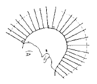

미용장 (2003-03-30 기출문제)
1과목: 임의 구분
1. 파운데이션(foundation)을 바르기 직전에 바르는 것으로 가장 적당한것은?
- 크린싱 크림
- 언더 메이크업 크림
- 크림타입의 화운데이션
- 콤팩트 파우더
(정답률: 알수없음)

2. 이완된 피부상태를 수축 시키며 피지분비의 과잉을 억제하는 산뜻한 감촉의 화장수는?
- 유연화장수
- 영양화장수
- 수렴화장수
- 소염화장수
(정답률: 알수없음)
3. 헤어린스의 종류중에서 샴푸시 남아있는 소량의 불용성 알칼리 성분을 중화시키고 금속 피막을 제거시켜 주는 역할을 하는 린스는?
- 플레인 린스
- 산성린스
- 오일린스
- 크림린스
(정답률: 73%)
4. 두발에 볼륨을 주거나 헤어스타일이 오래 지속될 수 있도록 단단한 기초를 만들기 위한 백코밍은?
- 모근에만 깊게 백코밍 한다.
- 모근쪽으로부터 두발 끝쪽까지 스트랜드 전체에 백코밍을 한다.
- 스트랜드의 중간 부분에서 두발 끝까지 백코밍한다.
- 모근쪽은 피하여 스트랜드 끝쪽에만 백코밍을 한다.
(정답률: 알수없음)
5. 다음 중 화학적 제모제의 pH는?
- pH 2-4
- pH 5-7
- pH 8-10
- pH 11-13
(정답률: 알수없음)
6. 비타민 부족시 피부는 건조하게 되며, 모공 각화증으로 모공 주위가 딱딱하게 돌기되어 탈모가 촉진되는 원인 비타민은?
- 비타민 D
- 비타민 A
- 비타민 C
- 비타민 B2
(정답률: 알수없음)
7. 다음 모발의 성장 주기(Hair cycle)의 설명 중 틀린 것은?
- 성장기(Anagen)-평균 3∼6년이며, 전체모발의 80∼90%를 차지하며, 한달에 약 1∼1.5cm정도 자란다.
- 퇴화기(Catagen)-모발생장의 대사과정이 느려지고 퇴화기간은 1∼1.5개월로 전체모발의 10%를 차지한다.
- 휴지기(Telogen)-모유듀가 위축되고 모낭이 수축하며 4∼5개월 지속되어 전체모발의 10∼14%를 차지한다.
- 발생기(New Anagen)-모낭에 둘러싸여 있던 모구부가 모유두와 다시 결합하여 새로운 모발을 생장시킨다.
(정답률: 알수없음)
8. 퍼머넨트 웨이브(permanent wave)제의 제2제는 산화제이다. 산화작용의 화학적 현상은?
- 물질이 산소(O)를 잃거나 수소와 화합한다.
- 물질이 수소(H)를 잃거나 산소와 화합한다.
- 물질이 산소와 수소를 잃는다.
- 물질인 산소 및 수소와 화합한다.
(정답률: 알수없음)
9. 블런트 커트(Blunt Cut)에 있어서 각도와 방향에 관한 설명 중 틀린 것은?
- 점점 짧게 하고 싶으면 스트랜드의 각도를 들어 커트한다.
- 스트랜드를 오른쪽 직각삼각형이 되도록 당겨서 커트하면 좌측모발이 길어진다.
- 판넬을 한쪽 방향으로 당겨서 커트하면 당긴 만큼 모발의 길이가 길게 된다.
- 스트랜드를 중심으로 모아 컷트하면 중심이 길어진다.
(정답률: 37%)
10. 다음 그림의 도해도는 어느 커팅인가?

- 라운드 그라데이션 커트(Round Gradation cut)
- 유니폼 레이어(Uniform Layer)
- 스퀘어 레이어(Square Layer)
- 원랭스(One Length)
(정답률: 28%)
11. 평균적인 컬이나 웨이브를 만들 때에 적당하며, 하나씩 독립된 컬에 사용하는 베이스는?
- 스퀘어 베이스(square base)
- 오블롱 베이스(oblong base)
- 아크 베이스(arc base)
- 트라이앵귤러 베이스(triagular base)
(정답률: 40%)
12. 블로 드라이로 스타일링을 한 후 수증기가 많은 곳에 있게 되면 쉽게 드라이 효과가 감소되는데 그 이유는?
- 두발은 수증기에 약하기 때문이다.
- 두발 중의 수소 결합이 수분에 의해 절단되기 때문이다.
- 블로 드라이 시술시 열을 약하게 했기 때문이다.
- 두발 중의 시스틴 결합이 수분에 의해 절단되었기 때문이다.
(정답률: 40%)
13. 영구 염모제에서 암모니아의 작용은?
- 암모니아는 염모제 속의 인공색소를 변화시킨다.
- 모발을 산성화시켜서 모표피를 닫아 주므로 모발손상을 감소시키는 역할을 한다.
- 암모니아에서 생성된 산소는 멜라닌 색소를 산화시키는 역할을 한다.
- 모발을 팽윤시키며 산화제와 반응하여 인공색소를 고분자 화합물로 변화 발색시킨다.
(정답률: 22%)
14. 3차색인 주홍색은 무슨 색과의 혼합인가?
- 빨강색 + 오렌지
- 노란색 + 오렌지
- 빨강 + 노랑
- 노랑 + 주황
(정답률: 55%)
15. 퍼머넨트 웨이브 시술시 소요되는 시간이 가장 짧아지는 경우는 어떤 때인가?
- 알카리니티(Alkalinity)가 낮을 때
- 탄력성(Elasticity)이 클 때
- 다공성(Porosity)이 클 때
- 저항력(Resistant)이 클 때
(정답률: 알수없음)
16. 다음 중 무대효과를 겨냥한 화장법은?
- 선번메이크업(sunburn make up)
- 데이타임 메이크업(day time make up)
- 컬러포토 메이크업(color photo make up)
- 그리스 페인트 화장(grease paint make up)
(정답률: 알수없음)
17. 다음 중 쪽진머리 형태가 아닌 것은?
- 떠구지 머리
- 쪽 머리
- 첩지머리
- 새앙머리
(정답률: 알수없음)
18. 짧은 두발에 여러 가지 색들이 나오게 하거나 한가지 색으로 하이라이트 할 경우 적합한 컬러 테크닉은?
- 플라잉(frying)컬러링
- 블록(block)컬러링
- 터치(touch)컬러링
- 토닝(toning)컬러링
(정답률: 50%)
19. 방전에 의해 발생되는 오존의 살균, 표백작용으로 여드름 주근깨, 사마귀 등에 유효한 전류 미안기는?
- 고주파 전류미안기
- 갤배닉 전류미안기
- 패러딕 전류미안기
- 적외선등
(정답률: 알수없음)
20. 두부의 둥근 형태와 두발을 자르는 각도의 관련성에 따른 완성도를 이해하고 기하학적인 형태미를 표출 해내는 커트는?
- 지오메트릭 커트(Geometric Cut)
- 어씨메트리 커트(Asymmetry Cut)
- 스트록 커트(Stroke Cut)
- 테이프 커트(Taper Cut)
(정답률: 알수없음)
2과목: 임의 구분
21. 다음 중 네모형 얼굴에 가장 어울리는 헤어 스타일은?
- 짧은 스포츠형
- 비대칭형 웨이브 디자인
- 단발 커트
- 탑을 강조한 스타일
(정답률: 알수없음)
22. 모근 부분은 웨이브가 없이 느슨하고 모발 끝 부분만 웨이브 진 것은?
- 새도우 웨이브(Shadow wave)
- 프리즈 웨이브(Frizz wave)
- 소프트 웨이브(Soft wave)
- 내로우 웨이브(Narrow wave)
(정답률: 알수없음)
23. 블로 드라이 작업시 활용하는 브러시 중 남성 헤어스타일이나 숏 헤어 스타일에 적합한 브러시는?
- 덴맨 브러시
- 쿠션 브러시
- 롤 브러시
- 스켈톤 브러시
(정답률: 알수없음)
24. 화장품 제품에 사용되는 파라벤류,파라아미노벤조산 에스테르 등의 용도는?
- 흡습제
- 방부제
- 산화방지제
- 착색제
(정답률: 알수없음)
25. 다음 중 마사지에 관한 설명으로 맞는 것은?
- 심부 경찰법은 마사지 시작하기 전 처음에 반드시 하는 방법이다.
- 강찰법에는 태핑, 슬래핑, 커핑, 해킹, 비팅의 테크닉이 있다.
- 고타법에는 롤링, 린징, 처킹의 테크닉이 있다.
- 경찰법은 양 손바닥과 손가락을 이용해서 피부를 쓰다듬어 주면서 가볍게 왕복운동,원운동으로 한다.
(정답률: 알수없음)
26. 여드름의 발생형과 원인이 잘못 짝지워진 것은?
- 뺨부위 - 모발에 의한 자극, 칼슘부족
- 입주위 - 비타민 B2와 B6 부족, 생리전
- 턱주위부 - 생리 전후, 장기능의 약화
- 목부위 - 자외선, 호르몬의 불균형
(정답률: 알수없음)
27. 일반적인 팩 마스크의 도포 순서로 가장 적정한 것은?
- 입주위-> 양볼-> 눈아래-> 얼굴윤곽-> 이마
- 눈아래-> 입주위-> 이마-> 얼굴윤곽-> 양볼
- 얼굴윤곽-> 양볼-> 눈아래-> 입주위-> 이마
- 이마-> 얼굴윤곽-> 눈아래-> 양볼-> 입주위
(정답률: 40%)
28. 모발의 경단백질(케라틴)을 구성하고 있는 아미노산이 아닌 것은?
- 알라닌
- 이소류신
- 페오 멜라닌
- 페닐 알라닌
(정답률: 알수없음)
29. 조화로운 배열로서 황금분할을 디자인에 적용하는 원리는?
- 유사조화
- 대비조화
- 비례
- 균형
(정답률: 알수없음)
30. 산성막이 부분적으로 또는 전체적으로 파손되어 극도로 당기며 가려움증, 염증, 피부박리, 두피손상을 일으키므로 카모마일 성분의 제품 등을 사용하여 부드러움과 진정의 효과를 주어야 하는 두피는?
- 비듬성 두피
- 지루성 두피
- 탈모성 두피
- 건성 두피
(정답률: 알수없음)
31. 다음 중 급성전염병에 해당하는 것은?
- 콜레라
- 성병
- 한센병
- 결핵
(정답률: 알수없음)
32. 비위생적 가정분만과 관계가 가장 큰 전염병은?
- 파상풍
- B형 간염
- 장티푸스
- 폴리오
(정답률: 10%)
33. 다음 전염병 중 병원체가 기생충인 것은?
- 결핵
- 백일해
- 말라리아
- 일본뇌염
(정답률: 알수없음)
34. 전염병 관리상 환자격리를 요하지 않는 질병은?
- 장티푸스
- 콜레라
- 파라티푸스
- 일본뇌염
(정답률: 알수없음)
35. 다음 중 자극성 가스의 피해와 가장 거리가 먼 것은?
- 신경통
- 호흡기 질환
- 안질염
- 위염
(정답률: 40%)
36. 다음 중 치명율이 가장 높은 세균성 식중독은?
- 살모넬라증
- 보툴리누스 중독
- 포도상구균 중독
- 장염 비브리오 중독
(정답률: 39%)
37. 다음 중 건강보균자에 대한 설명으로 가장 옳은 것은?
- 전염병에 걸렸다 완전히 치유된 자
- 전염병에 걸리면서 발병하기 까지의 기간이 있는 자
- 전염병에 걸렸으나 자각증상이 없는 자
- 병원체를 보유하고 있으나 증세가 없으며 체외로 이들을 배설하고 있는 자
(정답률: 알수없음)
38. 구순염, 설염 등과 밀접한 관계가 있는 비타민은?
- 비타민A
- 비타민B2
- 비타민C
- 비타민D
(정답률: 알수없음)
39. 잠복기가 전염병관리상 이용되는 것은?
- 보균자의 기간결정
- 격리의 기간결정
- 감염기간의 결정
- 검역의 기간결정
(정답률: 알수없음)
40. 소독약의 조제에 관한 기술 중 잘못된 것은?
- 소독액의 용기는 조제하는 소독액과 반응하지 않는 것이어야 한다.
- 천칭으로 칭량할 때 분동은 조심스럽게 손으로 다룬다.
- 액체를 계량할 때는 메스실린더를 사용한다.
- 병에서 소독약을 부을 때에는 라벨이 붙어있는 쪽의 반대쪽으로 기울여 따른다.
(정답률: 알수없음)
3과목: 임의 구분
41. 임신 중 모체에서 태아로 전염되는 전염병은?
- 한센병
- 매독
- 디프테리아
- 발진열
(정답률: 알수없음)
42. 정상적인 실내공기 중 체적백분비가 가장 많은 것은?
- 산소
- 이산화탄소
- 질소
- 알곤
(정답률: 20%)
43. 우유의 초고온 순간멸균법으로 가장 적절한 것은?
- 62∼65℃에서 30초
- 70∼72℃에서 10초
- 100∼110℃에서 5초
- 132∼135℃에서 2초
(정답률: 알수없음)
44. 다음 중 일광소독(2-3시간 조사)을 통하여 멸균될 수 있는 병원균은?
- 이질균
- 콜레라균
- 결핵균
- 장티푸스균
(정답률: 50%)
45. 음식물의 냉장고 보관과 가장 관계가 먼 것은?
- 식품중의 미생물 사멸
- 식품중의 미생물 증식 억제
- 식품의 신선도 유지
- 식품의 풍미 유지
(정답률: 알수없음)
46. 연노동 시간당 손실 노동일수로서 재해분석을 하는 것은?
- 건수율
- 강도율
- 도수율
- 재해율
(정답률: 알수없음)
47. 인구의 자연 증가율은?
- (출생율 + 전입율) - (조사망율 + 전출율)
- 전입율 - 전출율
- 조출생율 - 조사망율
- 연말인구 - 연초인구
(정답률: 24%)
48. 세균의 독소가 질병을 일으키는 것은?
- 디프테리아
- 장티푸스
- 폐염
- 살모넬라증
(정답률: 알수없음)
49. 다음 전염경로와 전염병의 연결이 잘못된 것은?
- 직접접촉전염-성병
- 개달물전염-트라코마
- 수인성전염-콜레라
- 비말전염-폴리오
(정답률: 60%)
50. 우리나라 전염병 예방법상 제1군 전염병에 해당하는 것은?
- 세균성이질
- 백일해
- 일본뇌염
- 폴리오
(정답률: 알수없음)
51. 다음 중 공중위생영업소의 위생관리등급 공표에 관련사항으로 틀린 것은?
- 위생서비스평가의 결과에 따른 위생관리등급을 해당 공중위생 영업자에게 통보하고 이를 공표 하여야한다.
- 통보 받은 위생관리등급의 표지는 영업소의 명칭과 함께 영업소 내부에만 부착할 수 있다.
- 위생서비스평가의 결과 위생서비스의 수준이 우수하다고 인정되는 영업소에 대하여 포상을 실시할 수 있다.
- 위생서비스평가의 결과에 따른 위생관리등급별로 영업소에 대한 위생감시를 실시하여야 한다.
(정답률: 알수없음)
52. 이용 또는 미용의 영업소 소재지를 변경하고자 할 때의 내용으로 옳은 것은?
- 소재지 변경시 시.도지사에게 신고한다.
- 소재지 변경시 시.도지사에게 통보한다.
- 소재지 변경시 시장.군수.구청장에게 신고한다.
- 소재지 변경시 시장.군수.구청장에게 통보한다.
(정답률: 알수없음)
53. 이.미용 업소의 위생관리 의무를 지키지 아니 한 자에 대한 법적 조치는?
- 100만원 이하의 과태료
- 200만원 이하의 과태료
- 300만원 이하의 과태료
- 300만원 이하의 벌금
(정답률: 30%)
54. 다음 중 이.미용 영업자에 해당되는 보건복지부령이 정하는 시설 및 설비기준에 속하는 것은?
- 화장실
- 세면시설
- 소독장비
- 조명시설
(정답률: 46%)
55. 이.미용사가 업무정지처분을 받고 업무 정지기간 중 업무를 행한 때의 1차 위반 행정처분기준은?
- 면허취소
- 업무정지 3월
- 업무정지 6월
- 업무정지 9월
(정답률: 알수없음)
56. 이용사 또는 미용사가 1회용 면도날을 2인 이상의 손님에게 사용한 때의 2차 위반 행정처분기준은?
- 경고
- 영업정지 5일
- 영업정지 10일
- 영업정지 1월
(정답률: 알수없음)
57. 이.미용사 면허가 취소된 후 계속하여 업무를 행한 자에 대한 벌칙은?
- 100만원 이하의 벌금
- 200만원 이하의 벌금
- 300만원 이하의 벌금
- 500만원 이하의 벌금
(정답률: 알수없음)
58. 다음 중 이용사 또는 미용사의 면허를 받을 수 있는 자는?
- 정신질환자 또는 간질환자
- 마약 기타 대통령령으로 정하는 약물 중독자
- 면허가 취소된 후 1년이 경과된 자
- 금치산자
(정답률: 42%)
59. 다음 사항 중 규정에 의한 이. 미용사에 대한 청문 실시대상이 아닌 것은?
- 면허취소시
- 개선명령시
- 영업정지시
- 면허정지시
(정답률: 40%)
60. 이ㆍ미용사가 면허증을 다른 사람에게 대여한 때의 3차 위반 행정처분기준은?
- 영업장폐쇄명령
- 면허취소
- 업무정지 6월
- 업무정지 3월
(정답률: 알수없음)